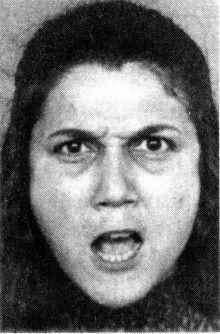

第1章 一张愤怒的脸和一道乘法题
想要观察你在自动模式下的大脑活动，请看图1.

图1
审视这位女性的脸时，你正在很自然地将我们平时所说的观察和直觉思考结合在一起。你可以确定且迅速地判断这位年轻女性的头发是黑色的，你还知道她正在生气。此外，你还可以根据自己的观察对其行为进行推测。你感觉到这位女性正要说一些刻薄话，也许声音又大又刺耳。推测被观察对象即将做出的举动并不难，这种活动是无意识的，而且毫不费力。你并非有意评论她的情绪或是推测她可能要做的事，你对这张照片的反应跟你做过的事情没有丝毫关系，一切都是自然而然发生的。这就是快思考的一个例子。
现在，请看下面的问题：
17×24
你能立刻知道这是一道乘法题，也许你还会想到若有纸笔，就能算出答案。你还会对答案的大体范围有个模糊的直观认识，能很快知道12 609和123不可能是答案。但如果不花点时间来计算的话，你就无法确定568不是正确答案。由于想不出一个准确的答案，你认为自己得想想是不是要做这道题。如果你还没有做这道题的话，就该试着做一做，哪怕完成其中的一部分也好。
按部就班的运算过程便是慢思考。首先，你会从记忆中重新提取读书时所学的乘法相关知识，然后加以运用。这个过程不容易，你得记住很多内容，你要知道自己算到哪一步了，知道下一步该怎样做，同时还要记住已得到的结果。这个计算过程是脑力工作，需要刻意、努力并且有序地进行——这也是慢思考的一个特征。这种计算不仅是大脑活动，身体也会参与其中，在计算时你的肌肉会紧张，血压会上升，心跳会加速。若在你解决这个问题时，有人在近处看你的眼睛，他会发现你的瞳孔也会扩大。结束计算时——得出正确答案（顺便提一下，答案是408）或是放弃计算都被视为结束计算——你的瞳孔便会恢复到正常大小。